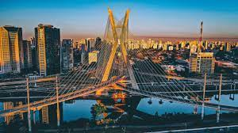

Cidade de São Paulo

São Paulo é um município brasileiro, capital do estado de mesmo nome e cidade mais populosa do Brasil. Listada pela Globalization and World Cities Research Network (GaWC) como uma cidade global alfa, exerce significativa influência internacional no comércio, finanças, artes e entretenimento.[8] É a área urbana mais populosa do mundo fora da Ásia e a cidade lusófona mais populosa do planeta. Seu nome homenageia Paulo de Tarso e seus habitantes são conhecidos como paulistanos. O lema latino da cidade é Non ducor, duco, que se traduz como "Não sou conduzido, conduzo".[9][10]
Fundada em 1554 por padres jesuítas, a cidade foi o centro dos colonizadores bandeirantes durante o Brasil Colônia, mas tornou-se uma força econômica relevante apenas durante o ciclo do café em meados do século XIX. Posteriormente, consolidou seu papel como principal centro econômico nacional com a industrialização no Brasil no século XX, que fez da cidade um caldeirão cosmopolita, lar das maiores diásporas árabes, italianas e japonesas do mundo, com bairros étnicos como Bixiga, Bom Retiro e Liberdade, além de pessoas de mais de 200 outros países.[11] A região metropolitana da cidade, popularmente chamada de Grande São Paulo, é a mais populosa do Brasil e uma das mais populosas do mundo, com cerca de 20 milhões de habitantes. O processo de conurbação entre as regiões metropolitanas do entorno da Grande São Paulo também criou a Macrometrópole Paulista, a primeira megalópole do hemisfério sul, com mais de 30 milhões de habitantes.[12][13]
Construida em 25 de março de 2025
por Gabriel Rufino.